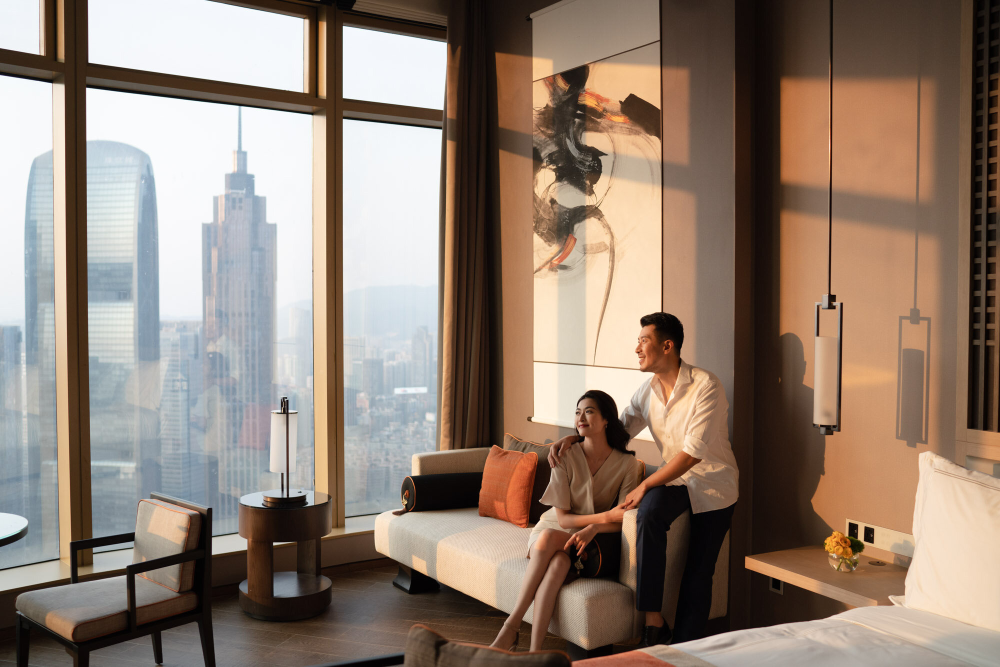
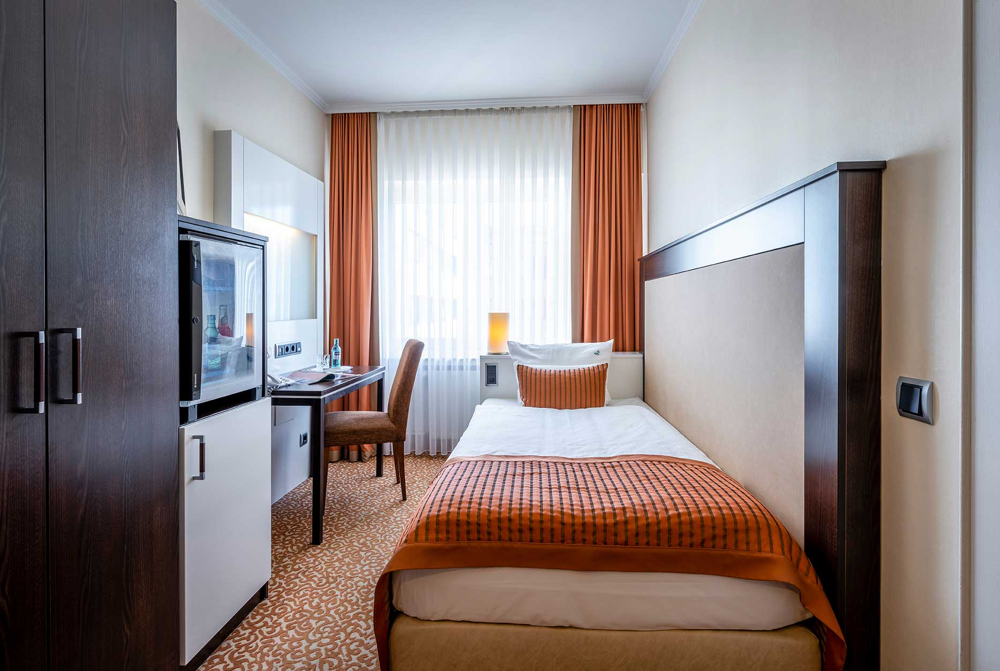
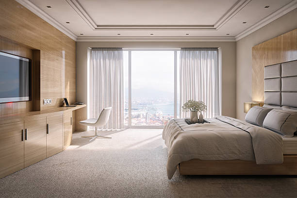
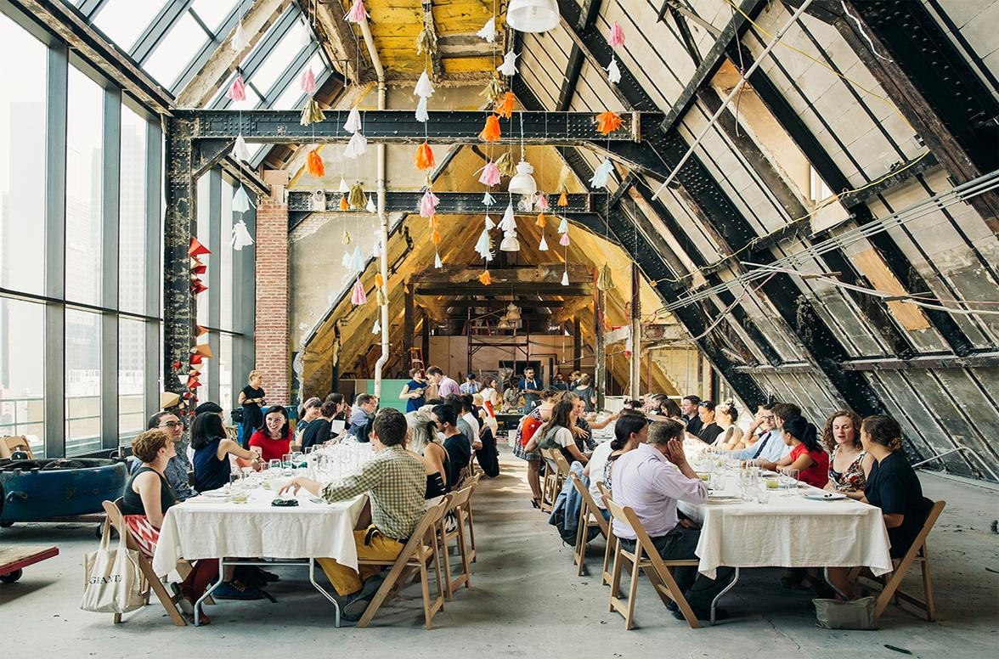

The Continent Hotel Bangkok is a Michelin Guide Bangkok listed Hotel. The building is a 39 storey, all Glass tower and is a masterful combination of style, design with intimate spaces and just seven rooms on every floor. Guests say “Location, Location, Location” as it is in the very heart of Bangkok’s Commercial, Retail, Entertainment and Convention district.
Standard rooms are cheaper than deluxe rooms but they are comfortable as deluxe rooms. This type of room offers a choice of a Single sized bed in either Smoking or Non Smoking rooms.

Styple and elegance define The Continent Hotel’s deluxe room which is both cozy and warm and very inviting. This type of room offers a choice of a king sized bed or twin beds in either Smoking or Non Smoking rooms.


Bangkok Heigtz is a smmall casual modern thai foos restaurant and bar located on the rooftop of the continent hotel situated on the 39th floor of the hotel overlooking a fabolous cityspace, it features thai dinning that takes its inspiration from food street. mixology at the hotel remains creative with signature cocktails taking their ins[iration from local herbs and speces. lyrics on the roof adds live music entertainment to your weekend with friday ans saturday nights local bands playing thai pop and international tunes.